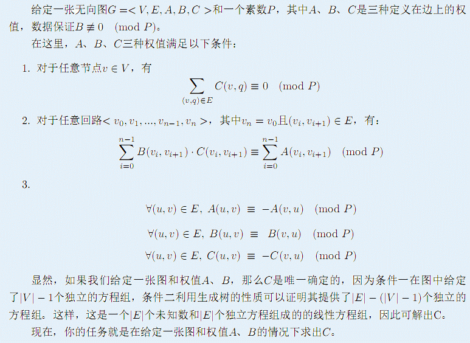

F.A.Qs
Home
Discuss
ProblemSet
Status
Ranklist
Contest
入门OJ
ModifyUser
Xeonacid
Logout
捐赠本站
Notice:
注册本OJ方式请见https://www.lydsy.com/JudgeOnline/wttl/thread.php?tid=5671
Problem 3266. -- 图上方程组
3266: 图上方程组
Time Limit:
30 Sec
Memory Limit:
512 MB
Submit:
20
Solved:
10
[
Submit
][
Status
][
Discuss
]
Description

Input
第一行有三个整数V,E,P
接下来E行，每行四个整数x,y,a,b分别表示x与y有一无向边，
a(x,y)=a,b(x,y)=b。显然根据题意默认a(y,x)=-a
b(y,x)=b。输入数据保证没有自环和重边。
V<=100,E<=2000,P<=10^18
Output
一共E行，按输入数据给定边的顺序，输出最小的大于等于零的C(x,y)值。
很显然c(y,x)=-c(x,y) mod p.但是不需要输出c(y,x)
如果无解，输出-1
Sample Input
3 3 7
1 2 15 -6
2 3 22 8
3 1 1 -69
Sample Output
1
1
1
HINT
Source
鸣谢 fzszzy制作数据
[
Submit
][
Status
][
Discuss
]
HOME
Back